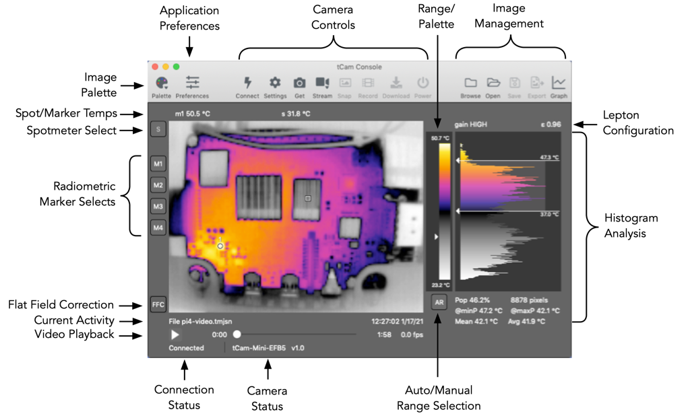
Main window operation is described below.
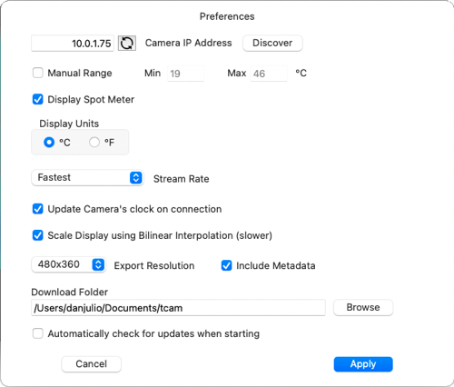
The preferences window is used to configure the application. Preferences are stored on the computer and loaded each time the application starts.
Applications->Check for updates... menu item if this is de-elected. No information is transmitted during the check.The tCam-POE camera using its Ethernet interface has either a DHCP-served or statically assigned IPV4 address. This address is entered into the application preference's Camera IP Address field. A statically assigned address may be set using the Settings button as described below (Camera Settings Window).
The tCam cameras operate in one of two WiFi modes. By default they act as an Access Point (AP) and create their own WiFi network with the SSID "tCam-XXXX" or "tCam-Mini-XXXX" where XXXX are four hexadecimal digits. This makes it easy to connect to a camera right away. Once connected the camera may be reconfigured using the application to connect to an existing WiFi network, either getting a DHCP served IPV4 address from the network's router or with a statically assigned IPV4 address. This makes it possible for the computer running the application to talk to both the camera and the internet at large.
Configure the computer to connect to the camera's SSID. The camera always has a IPV4 address of "192.168.4.1" when it is acting as an Access Point so this number should be entered into the application preference's Camera IP Address field (this is the application's default value). Press the Connect button after configuring or verifying the preference IP address field.
Once connected the application can be used to reconfigure the camera to connect to an existing WiFi network using the Settings button as described below (Camera Settings Window). The camera may be configured to either get a DHCP served IPV4 address from the router or given a static IPV4 address on the network.
Connecting to a camera on an existing WiFi network requires the camera's IPV4 address to be entered into the application preference's Camera IP Address field before pressing Connect. For cameras running firmware prior to version 3.0, it may be necessary to log into the WiFi router or use a utility program (for example Fing on Android or nmap on Linux) to obtain the camera's IPV4 address if it has been assigned automatically using DHCP.
tCam-Mini cameras running version 3.0 firmware or later, and all tCam and tCam-POE cameras implement mDNS (bonjour) for discovery. The Discover Cameras window displays all cameras on the local network. Selecting a camera and clicking Apply sets the Camera IP Address with the IP Address of the selected camera.
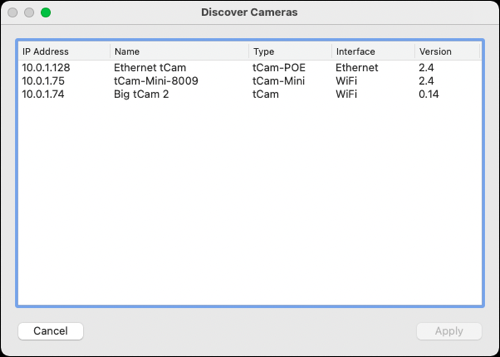
The application is oriented around radiometric image files. It always displays the last image it processed. This may be a static image loaded from a file or taken by an attached camera. It may also be a series of images from a video file or streamed from the camera. Each image is displayed using a selected Palette to provide a false color image. The 16-bit radiometric data is linearly scaled to 8-bits and the selected palette used to generate 24-bit RGB pixel colors. When the camera is configured into AGC mode the 8-bit data from the camera is used directly with the selected palette.
Note that while the application is designed primarily for use with radiometric image files, it is also capable of displaying images taken when the camera's Lepton sensor has been configured into AGC mode. In this case, since the data from the camera no longer contains radiometric information, several functions (such as radiometric markers or histogram analysis) are not available.
Camera controls are available when the application is connected to a camera. The main camera controls are displayed at the top of the main window. These controls and additional controls are displayed under the Camera pull-down menu.
danjuliodesigns.com.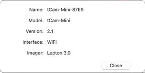
The Camera Settings Window allows configuring the camera operation. Items with the associated "Update Camera" checkbox set will be updated in the camera if Apply is pressed.
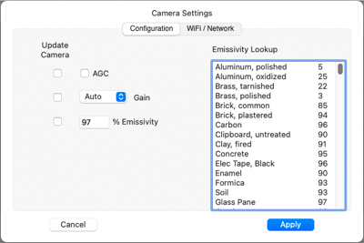
Configuration items affect the Lepton's operation.
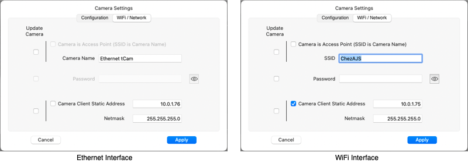
The WiFi / Network tab configures the camera network interface.
For cameras using an Ethernet interface (tCam-POE configured to use Ethernet) the tab displays Network items. Network items include the camera name and if a static IP should be set.
For cameras using WiFi (tCam, tCam-Mini and tCam-POE configured to use WiFi) the tab displays WiFi items. WiFi items include whether the camera is acting as an Access Point (AP) or connecting to an AP (Client mode), the associated SSID and password and if a static IP should be set (in Client mode only - the camera always has the IP address of 192.168.4.1 in AP mode).
The application will be disconnected after changes to the Wifi / Network configuration are made. The application Camera IP Address field preference may need to be updated to reconnect.
Selecting Download queries the connected camera for all files stored in its local storage. The files and their parent directories are displayed in the download window.
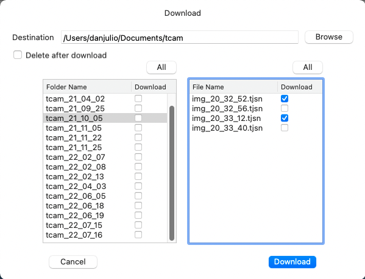
The window allows selecting either entire folders for download or individual files within a folder for download to the destination parent folder. Click the associated Download checkbox next to either the folder name or file name and click Download to start downloading files. Selecting the Delete after download checkbox will delete the file or folder on the camera after it is downloaded.
The Range/Palette display shows the currently selected palette with a marker showing the spotmeter temperature location within the range of temperatures. It also displays the minimum and maximum temperatures used to scale the image when the Lepton is operating in Radiometric output mode. These temperatures are simply the minimum and maximum temperature in the image's radiometric data when Auto Range Selection is enabled. They are the manual temperature range (set by the user in the Preferences window or automatically when the AR button is pressed) when Manual Range Selection is enabled. Clicking at the top of the palette graphic will select the next palette. Clicking at the bottom of the palette graphic will select the previous palette.
Image Management controls are available based on the type of operation occurring or image being displayed.
An example of a 320x240 pixel exported image (with metadata) is shown below.
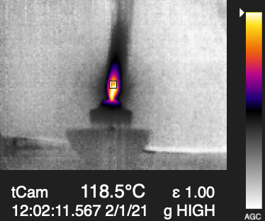
A pull-down menu allowing selection between a set of false color maps. Different palettes are useful in visualizing various attributes of an image. For example the Rainbow HC palette, with its rapidly changing colors is good for showing temperature gradients while the Ironblack palette is good for emphasizing only the hotter areas in a scene.
Displays the current enabled SpotMeter ("s") or Radiometric Marker temperatures ("m1" - "m4").
The SpotMeter temperature is taken from the telemetry data in the last image. It is based on a 4-pixel average.
The Radiometric Marker temperatures are computed based on the Radiometric data in the last image. They are also computed using a 4-pixel average.
Clicking the Spotmeter Select button enables setting the spot meter position in the Lepton by clicking on a location in the image. Note that changing the spotmeter position causes a command to be sent to the camera setting the location. However the spotmeter display in the image and the temperature displayed above are not changed until a new image is loaded from the camera.
The Radiometric Markers are only enabled if the displayed image contains radiometric data (they are disabled if the image was generated by the Lepton while AGC is enabled).
Clicking on a Radiometric Marker Select button enables setting the associated marker position in the displayed image. The marker is displayed immediately since it is calculating the temperature at the location based on the existing image radiometric data.
Double clicking a Radiometric Marker Select button disables the marker if it is currently displayed.
Clicking on the FFC button causes the connected camera to initiate a Lepton flat field correction.
The Current Activity area displays the source of the last loaded image and its timestamp. It also displays a pair of forward and backward buttons when browsing a folder.
The Video Playback area displays controls and timestamp information when a video file has been opened. It also displays the frames-per-second of a playing video or stream.
A play/pause button, denoted by a single right-facing triangle, controls video playback. A position slider allows setting the video position.
Video files with a frame-rate of below 1 frame-per-second cause a second fast forward button, denoted by a double right-facing triangle, to appear. Pressing this button plays the video at a fixed rate of one frame-per-second instead of the video's normal rate (which could be as slow as one frame every five minutes!).
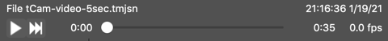
Connection Status shows the current connection state, either Connected or Disconnected. While connected the application periodically sends a request for status. If the camera does not respond with a status response within three attempts, the application will assume the camera has been disconnected.
Information from the camera status responses are displayed in the Camera Status area including the camera name, and optionally battery level and charge status for tCam.
The Auto/Manual Range Selection button toggles between Automatic and Manual Range modes when the Lepton is configured in Radiometric mode (the button is disabled if AGC is enabled).
In Automatic Range mode the minimum and maximum temperatures present in each image are used to linearly scale the radiometric data.
Manual Range mode uses a preset minimum and maximum temperature to scale the radiometric data. This mode is useful to eliminate radical image changes while streaming or playing back a video and the scene dynamic range changes from image to image resulting in very different false color mappings. Typically a manual range is set to be slightly greater than the largest expected scene range.
The Range mode can also be controlled via Preferences.
When the Auto/Manual Range Selection button is used to enter Manual mode, the minimum and maximum temperatures are set by rounding the existing scene minimum temperature down to next whole number value and the existing scene maximum temperature up to the next whole number value.
Displays the Lepton's gain and emissivity settings for the current image.
The gain setting is either HIGH or LOW. When the camera's Lepton is allowed to automatically select the gain setting (via the Camera Settings) then it will use a High gain setting for scenes with a low dynamic range (-10°C to 140°C) for improved accuracy and resolution. It will switch to Low gain setting for scenes with a higher dynamic range.
The emissivity setting is a percent, from 1-100, that the Lepton uses to improve accuracy when computing the radiometric temperature of each pixel. It should be set to match the emissivity of objects in the scene.
The Histogram Analysis area displays a histogram showing the relative number of pixels for each of the 256 values (bins) that result from the linear transformation of the radiometric data or are direct from the camera when AGC is enabled.
A pair of markers can be dragged onto the histogram. The markers display the temperature of the bin they are over when the image contains radiometric data.
Additional information is displayed about the region between the two markers when both are dragged onto the display.
Temperature data from a streaming session or video file may be graphed over time for further analysis. If enabled the spotmeter temperature is included in the graph. Any enabled Radiometric Markers (radiometric data only) are also included allowing a total of up to five locations in the image to be plotted.
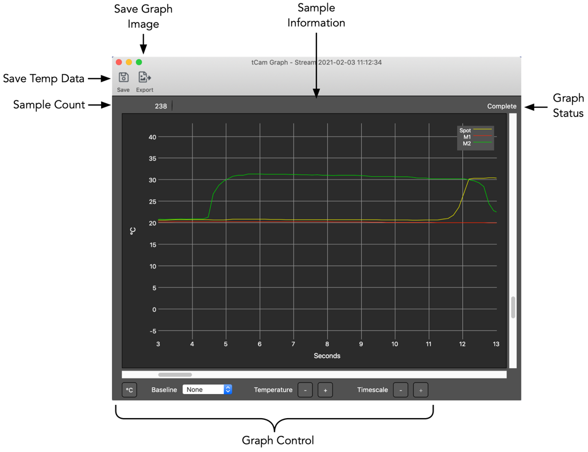
To graph from a stream
To graph from a video file
Multiple graph windows may be opened. The data may be saved in a text file or an image of the graph exported once the graph is complete.
Saves the temperature data in a text file comprised of one or more temperature values following a timestamp, separated by spaces with one set per line.
<timestamp> <spot> <m1> <m2> <m3> <m4> <CR><LF>Saves the contents of the graph window as a jpg, png or tiff formatted file.
Selecting "Copy" from the Graph Window Edit pull-down menu copies the contents of the graph window to the computer's clipboard.
The graph is marked Complete when all data has been plotted. This occurs when streaming is stopped or after all video file data is processed. No further data will be added to the graph.
Graph Controls control how the data is displayed.
The position of the data graphed is controlled by the horizontal and vertical sliders. It may also be controlled, when the cursor is over the graph, by horizontal and vertical mouse controls.
Positioning the cursor over the graph displays the sample points on each trace. Positioning the cursor over a sample point displays the sample data in the Sample Information area. Sample data includes the sample source, its time relative to the start of the graph, the sample's original timestamp and its temperature.
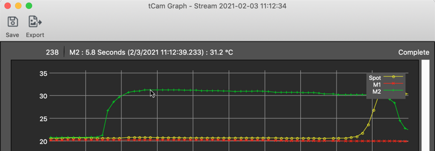
Selecting a baseline allows comparing temperatures on traces with the temperature on the baseline trace. This is often useful for comparing a temperature of something with the temperature of an object with a precisely known temperature for improved accuracy.
In the image below the temperature of a point on the M2 trace is compared with the temperature of the point on the Spotmeter trace.
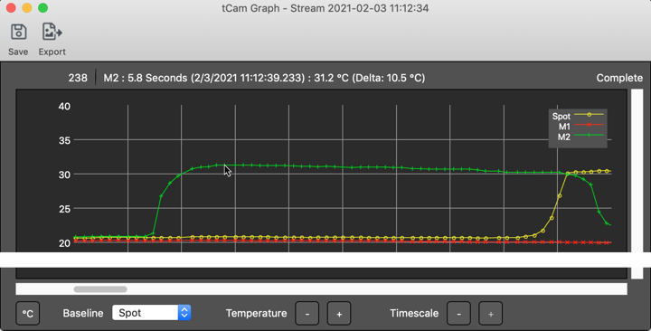
All functions available through controls on the Main Window are also available from the pull-down menus at the top of the window (or OS X main menu bar).
The Application menu item contains two items not accessible elsewhere that provide additional functionality.
danjuliodesigns.com.The CCI Access window allows direct access to the Lepton's I2C interface as described in the Flir Lepton Software Interface Description Document. It allows access to the Lepton CCI registers and Block Data Buffer 0 for data lengths greater than 16 DWORDs.
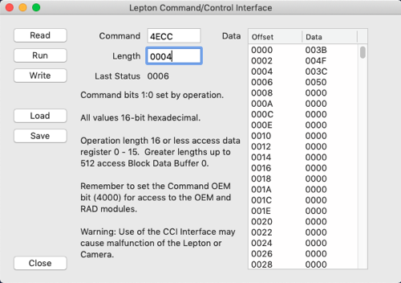
You should be familiar with the Lepton CCI Interface. It is possible to misconfigure and/or crash the Lepton or tCam camera using this interface.
Operation is straight-forward. The Command, Length and Data fields correspond directly with the associated Lepton registers. The first sixteen Data values are associated with Data 0 - 15 for Length's of 16 DWORDs or less. The up to 512 Data values are associated with Block Data Buffer 0 for Length's of 16 DWORDs or more.
To read the Lepton configure the Command and Length and click READ. The Data fields are updated. The Last Status field is updated with the STATUS register value after the read.
To write the Lepton configure the Command, Length and Data values and click WRITE. The Last Status field is updated with the STATUS register value after the write.
To run a command sequence configure the Command value and click RUN. The Last Status field is updated with the STATUS register value after the run command.
The LOAD and SAVE buttons save or load values to or from a simple text file with one value per line. The file layout is as follows.
Command
Length
Data 0
...
Data <Length - 1>The Log Window displays connection/disconnection status messages and logs the transmitted and received json packets to the camera. It can be useful to understand the packet contents.
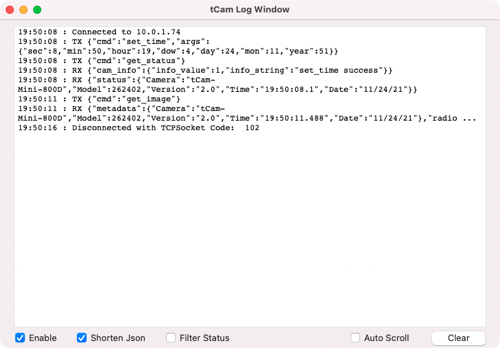
It provides a simple set of controls.
get_status and status response packets which are sent periodically while the application is connected to the camera to verify connectivity.Updates for either the application or firmware are displayed in the Update Available window. It displays a description of the changes in the new version. Clicking Download will download a zip file with the new application (for the current platform) or firmware (for the connected camera).
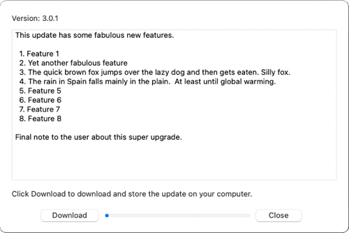
The Help menu items contains the following selections.
The application supports two file formats.
The "video_info" json text string contains the starting and ending timestamps and number of frames. It is used by the application to validate the file and also determine if it should show the "Fast Forward" control for videos with long delays between frames.
{
"video_info": {
"end_date": "2/2/21",
"end_time": "21:53:10.8",
"num_frames" 143,
"start_date": "2/2/21",
"start_time": "21:52:46.8",
"version": 1
}
}The Update Firmware menu selection is available for cameras that support over-the-air FW updates. Selecting it opens a file selection dialog box. Open a FW binary file appropriate for the camera.
tCamMini.bin binary file.tCam.bin binary file.An error message is displayed if the selected file is not the appropriate binary file for the connected camera. A warning message is displayed if the selected file has a version that is equal to or less than the version the camera is currently running.
Once a binary file has been loaded the camera will indicate that a firmware update has been requested. The user must perform an action on the camera to initiate the update.
Confirm to initiate the update.A progress bar is displayed in a dialogue box during the firmware update. The camera will reboot once the firmware update is completed successfully. An error message is displayed if the update is unsuccessful.
This application is designed primarily for use with the Lepton outputting radiometric data because that data allow analysis of scene temperature, even from a stored image or video file. A linear transformation is performed on the data to generate a visual image. This image may not be as good, visually, as an image generated when the Lepton AGC is enabled so this mode is also supported for the cases where the user prefers a better image at the expense of being able to access the temperature of each pixel. The Spotmeter is still functional in AGC mode so the temperature at one point can still be displayed.
Read the Flir Lepton 3.5 data-sheet for a better description of AGC mode (and why Flir is clearly so proud of it...).
The Lepton 3.0 does not support Radiometric data output. The application suppresses all temperature related controls and displays when connected to a camera with a Lepton 3.0.